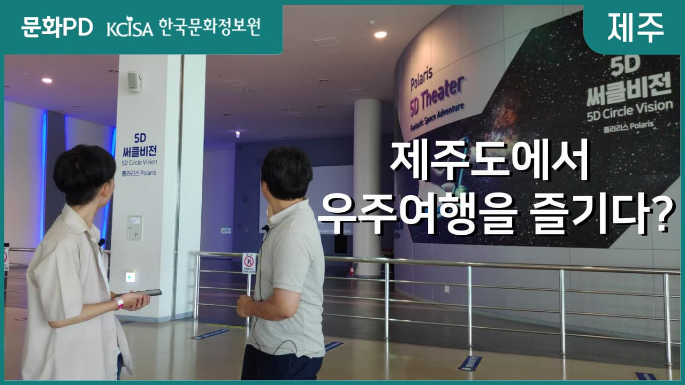
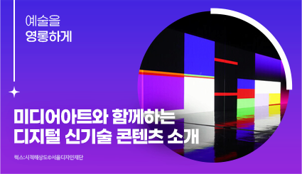

웹진
다양한 문화정보 및 소식을 문화포털 웹진으로 받아보세요
-
문화
영상[문화PD] 디지털 실감 기술로 방탈출게임을? 역사적 공간이 게임 속 세계가 된다!4.19민주묘지와 전쟁기념관에서 모바일 기기를 활용해 주어진 과제를 수행하며 역사를 느낄 수 있는 실감형 콘텐츠가 있다고 하는데요, 오프라인 공간에 온라인 콘텐츠를 더해서 4.19혁명과 6.25전쟁 등 국내 중요한 현대사를 더 오래 기억할 수 있을 것 같습니다. 실감형 콘텐츠로 역사적 공간의 의미를 더 잘 느껴보세요! - 대본 :우리가 알고 있는 역사적 공간이 게임 속 세계가 된다면 어떨까요?스마트폰과 같은 모바일 기기만 있으면 역사적 공간이 게임 속 세계로 재탄생됩니다.증강현실(AR), GPS, 웹 화면, 전화송수신 등 다양한 디지털 실감 기술이게임의 몰입감을 높여주는데요, 어서 빨리 만나러 가볼까요?제일 먼저 방문한 곳은 바로 419민주묘지입니다.4.19민주묘지는 4.19혁명 당시 자유민주주의를 위해 싸우다 희생되신 분들이 잠들어 계신 곳인데요, 이곳에서 아주 특별한 프로그램을 체험할 수 있다고 합니다.“네 이렇게 419민주묘지 내부로 들어왔는데요. 4.19민주묘지 내부의 곳곳에는 이렇게 미션게임을 알리는 배너들이 있습니다. '이 세계를 구할 용사를 찾습니다', 뭔가 웹소설에 나올 것 같은 제목 아닌가요? 그럼 저와 함께 미션게임 진행하러 가보시죠”이렇게 gps를 기반으로 사용자에게 미션을 줍니다“이렇게 지도를 보면서 퀘스트를 수행하고 있는데, 상징문 앞에 와서 보니까 계산문제가 있더라구요. 이렇게 문제를 풀면서 미션을 하나씩 수행해나가고 있습니다”모든 미션은 4.19혁명과 관련되어 있었는데요“퀘스트를 수행하면서 4.19혁명정신이 자유,민주,정의라는 것을 알았습니다”4.19혁명 기념관 내부에서도 미션이 이어졌는데요, 4.19혁명에 대한 보다 자세한 이야기를 볼 수 있는 곳이었습니다. 다섯 개의 쪽지와 실제 현장을 비교하여 숨겨진 소원을 알아내는 미션도 있었는데요, 이 시기 사람들이 바란 소원은 무엇이었을까요? “바로 평화로운 일상이었는데요. 이렇게 쪽지를 채워나가는 활동을 하니까 진짜 방탈출게임 하는 것 같아요”4.19 기념탑에서도 퀘스트가 이어졌는데요. 기념탑 앞에서 4.19혁명 당시 희생된 분들께 묵념하는 시간도 가졌고요, 민주묘역에 가서 묘역의 주인을 찾는 미션도 있었습니다. 묘비의 주인은 바로 진영숙님이었습니다4.19혁명 희생자 중 유일하게 유서를 남겼다는 여중생 진영숙 열사의 묘지 앞에서 그분의 목소리를 들을 수 있었습니다.“여기까지 와줘서 고마워... 너희에게 꼭 묘역을 보여주고 싶었어. 어느 봄보다 뜨거웠던 4월, 우리는 혁명을 통해 자유를 얻었지만, 무언가를 잃어야만 했지.”이렇게 많은 분들의 희생이 있었기 때문에 지금 우리가 자유민주주의를 되찾을 수 있었던 것 아닐까요?“네 이렇게 4.19 민주묘지에서 모든 퀘스트들을 다 수행해서 자유를 되찾았습니다.”두 번째로 가볼 곳은 전쟁기념관입니다.전쟁기념관의 6.25전쟁실 1관과 2관에서도모바일 기기를 활용한 방탈출 게임을 진행할 수 있는데요, 전쟁기념관 2층 내부로 들어오면 체험을 시작할 수 있습니다. “전쟁기념관에도 옆에 이렇게 미션형 탈출게임을 알리는 배너가 있는데요, 이름은 '로스트솔져'입니다. 이거를 보면서 체험을 하는거에요.”미션키트와 함께 휴대폰 어플을 통해 퀘스트를 수행할 수 있는데요.“이렇게 미션 중간중간에 AR콘텐츠가 있으니까 미션을 더 풍성하고 실감나게 즐길 수 있습니다.”AR콘텐츠뿐만 아니라 다양한 기술 요소를 도입해서 이렇게 숨은 글씨를 알아내는 미션도 있었습니다. 숨은 글씨는 바로 B-01이었는데요, 이어지는 장소에서 전화를 걸면 미션에 대한 힌트를 주기도 합니다. AR콘텐츠를 활용해서 미션을 수...
-
![[문화PD] 디지털 트윈을 활용한 포레스트 시티 게임 파헤치기! 이미지](./02문화공감_웹진_files/cultureTvContents_202308309274596178.jpg) 문화
문화
영상[문화PD] 디지털 트윈을 활용한 포레스트 시티 게임 파헤치기!LX 한국국토정보공사에서 실시하고 있는 '디지털 트윈' 기술에 대해 이해하고디지털 트윈 기반 자료를 중심으로 개발된 게임 <포레스트 시티>를 통해신기술이 결합된 K-콘텐츠를 알아본다. --- 대본 --- 안녕하세요문화PD 21기 탐정 Lee입니다 여러분들은 우리 동네를 배경으로 한 게임이 나온다면어떠신가요?바로! 접속해보고 싶지 않으신가요? (탐정Lee 인트로) /오늘 탐구할 주제는 디지털 트윈을 활용한 게임 사례입니다한국국토정보공사와 협업하여 전라북도 전주를 배경으로 제작된 게임!<포레스트 시티> 를 직접 해보았습니다 먼저 캐릭터를 골라줍니다탐정Lee의 feel이 느껴지는 캐릭터로 선택<포레스트 시티>의 기본 세계관은 미세먼지가 가득한 마을에 나무를 심어 살기좋은 마을로 변화시키는 게임인데요나무 심기 외에도 시티 입장을 통해 전주시 덕진구의 동네를 돌아다닐 수 있습니다. 저~기 동네 슈퍼마켓도 보이네요!트랙 운동장이 있는 학교를 지나 덕진 공원 다리 위에서댄스타임 /게임 개발사인 펀잇은 한국국토정보공사의 디지털 트윈 자료를 받아 게임 제작을 진행했다고 하는데요 디지털 트윈? 그게 뭘까요?단어 그대로 직역하면, 디지털 쌍둥이라는 뜻으로 현실 세계의 물리적으로 존재하는 요소를 복제시킨가상 현실 세계라고 할 수 있습니다. 그렇다면 왜현실 세계를 디지털화하였을까요? 디지털 트윈의 구조를 살펴보면 이해하기 쉬운데요현실을 재현한 가상 공간 시스템에서 원하는 환경 변화 시뮬레이션을 진행합니다분석 결과에 따른 실시간 정보 수집을 통해 현실 상황에 대응할 수 있는 구조가 완성됩니다 전주시는 '스마트 시티 분석 플랫폼'을 통해 나무 심기 효과 분석, 불법 주정차 단속 경로 지원, CCTV 사각지대 분석 등 다양한 방면으로 디지털 트윈 시스템을 활용하고 있습니다 정부, 항공우주, 자동차, 의료 등 여러 분야에서 디지털 트윈 기술이 활용되고 있습니다 /앞으로도 디지털 트윈 기술을 통해 건강하고 스마트한 세상이 계속되길 바라며문화PD 탐정Lee는 사라지도록 하겠습니다다음 신기술 탐구 시간에 만나요안녕
-

문화
영상[문화PD] 제주도에서 우주여행 한번 즐겨볼까요?제주도에서 우주여행을 즐길 수 있을까요?제주항공우주박물관 학예사님과 이야기 나누고 제주항공우주박물관의 대표 콘텐츠를 직접 체험해봤습니다. [대본]섭지코지, 우도, 비자림제주도에 자연 말고 가볼 곳은 없을까?어? 제주도에서 우주여행을 즐길 수 있다고?이게 가능해?? 홍준서 PD: 제주도에서 우주여행을 즐길 수 있는 곳바로, 제주항공우주박물관입니다!! 제주항공우주박물관운영시간 : 매일 09:00 ~18:00 셋째 주 월요일 휴관요금 : 성인 10,000 | 청소년/군경 9,000 | 어린이/경로 8,000주소 : 제주 서귀포시 안덕면 녹차분재로 218문의 : 064-800-2000 그럼 지금부터 저와 함께 떠나보실까요? 홍준서 PD: 혹시 학예사님 맞으신가요?마대진 학예사: 저는 제주항공우주박물관 학예사 마대진이라고 합니다. 홍준서 PD: 제주항공우주박물관은 어떤 곳인지 소개 부탁드려도 될까요?마대진 학예사: 저희 제주항공우주박물관은 국토교통부 산하의 제주국제자유도시개발센터라는 곳에서 설립해서 운영 중인 곳이고요. 아시아 최대 규모의 항공우주 전문 박물관이라고 할 수 있습니다. 홍준서 PD: 2층에 테마관이라는 공간이 있던데 테마관은 혹시 어떤 곳인지 소개해주실 수 있으신가요?마대진 학예사: 저희 테마관은 다양한 영상이라던지 체험을 할 수 있는 전시공간이라고 할 수 있는데요. 총 4개의 영상관과 그리고 중력가속도 체험을 할 수 있는 공간이 있어서 총 5군데의 테마 공간이 있다고 보시면 됩니다. 홍준서 PD: 이런 멀티미디어를 활용한 전시의 장점이 있을까요?마대진 학예사: 이런 멀티미디어를 활용한 전시의 장점은 패널을 보고 전시물을 보는 우리가 생각하는 그런 단순한 전시 체험을 하는 거보다 영상을 통해서 시청각적으로 다양한 볼거리를 제공함으로 인해서 관람객들에게 좀 더 흥미롭게 다가갈 수 있다는 점이 장점이라고 할 수 있습니다. 홍준서 PD: 전시 콘텐츠를 선정하시는데도 여러 가지 많은 고민이 있으셨을 것 같은데 콘텐츠 선정에서 가장 중점적으로 어떤 부분을 고려하셨나요?마대진 학예사: 저희가 제주도에 있기도 하고 항공우주 전문 박물관이기 때문에 저희 주제와 맞는 콘텐츠를 선정하고 어떤 내용을 구성하느냐가 제일 주관점을 두는 부분이라고 할 수 있습니다. 홍준서 PD: 직접 체험을 한번 해보면 좋을 것 같은데요.마대진 학예사: 그러면 같이 테마관으로 가보실까요? 홍준서 PD: 여기가 바로 테마관이군요!마대진 학예사: 네, 이 공간이 바로 테마관입니다. 홍준서 PD: 이 중에서도 혹시 가장 인기 있는 콘텐츠가 있을까요?마대진 학예사: 가장 인기있는 콘텐츠는 뒤에 보이는 저희 5D 써클비전 폴라리스라는 영상관인데요. 그 중에서도 'HELLO JEJU'라는 콘텐츠입니다. 홍준서 PD: 여기서 잠깐! 3D, 4D, 5D 다양한 영상 형태가 존재하는데요.과연 어떤 차이가 있을까요? 정확한 정의는 없지만 차이를 간단하게 표로 정리해보았습니다. 먼저, 2D 영상은 우리가 일반적으로 보는 평면 영상이라고 할 수 있습니다.다음으로 3D 영상은 입체 안경을 쓰고 보는 영상, 4D 영상은 3D 영상에 더해 영상 속 효과를 실제로 표현해 바람과 소리, 빛, 진동 등을 느낄 수 있는 영상이고요.5D 같은 경우에는 4D와 마찬가지로 안경을 쓰고 사방에서 바람, 연기, 조명효과 등이 나오는데 360도 화면으로 이루어져 사방으로 영상을 볼 수 있다는 점이 4D와의 차이입니다. 궁금증이 좀 해결되셨나요? 홍준서 PD: 학예사님께서 가장 애정하시고 추천하시는 콘텐츠가 있을까요?마대진 학예사: 제가 가장 애정하는 콘텐츠는 가장 인기 많은 콘텐츠라고 소개드렸던 것과 동일한데 저희 폴라리스 영상관에 'HELLO JEJU'라는 콘텐츠입니다. 저희 영상관에 맞게 자체 제작한 영상인데요. 그렇기 때문에 좀 더 제주에 대해서 알리고 소개할 수 있는 관람객들에게 좀 더 다가갈...
문화드림
문화지식정보 아카이브 서비스
강원도 예술첫걸음지원 예술인
- 지원내용
- 도내 공공지원 실적이 없는 예술인의 창작활동을 지원
- 지원대상
- 강원도에 거주하며 도내 공공지원 실적이 없는 개인예술가 및 상업성이 없는 비영리 순수 예술활동을 하는 개인예술가
강원도 문화예술공간지원 단체·기관
- 지원내용
- 일상에서 쉽게 접할 수 있는 지역 문화공간을 개발 및 지원하여 강원도내 문화예술 인프라를 확대하는 사업으로 유휴공관 활용형과 창작공간 지원형 사업으로 진행
- 지원대상
- 강원도내 문화예술단체
문화공감
미디어아트와 함께하는 신기술! 이제 우리 주위에 미디어아트 전시를 많이 볼 수 있습니다.그만큼 미디어아트는 대중들에게 가까워졌는데요.오늘은 특색있는 미디어아트 전시를 소개해 드립니다. 새롭게 태어나는 명작 '명화 미디어아트로 피어나다' 정읍시립미술관에서 올해 최초로 실감미디어 전시를 진행하는데요. 그 첫 주자가 바로 '명화 미디어아트로 피어나다'입니다. 인상파 작가들의 주요 작품을 실감미디어 기법으로 생동감 넘치게 표현한 미디어아트 전시에는 우리에게 친숙한 클로드 모네, 빈센트 반고흐, 구스타프 클림트 등과 함께 한국인이 사랑하는 인상파 화가들의 작품이 봄, 여름, 가을, 겨울, 사계절로 구분되어 전시되어 있습니다.기존의 회화 작업을 뛰어넘어, 확장성 있는 미디어 작품들에 대한 새로운 경험과 더불어 명화에 대한 다양한 시각을 느낄 수 있으니 추천합니다. 문화 포털 > 문화지식 > 실감형 콘텐츠 새롭게 태어나는 명작 '명화 미디어아트로 피어나다'' 미디어아트의 정수 '백남준; 사랑은 10,000마일' 백남준은 우리나라 미디어아트의 선구자입니다. 동양과 서양, 음악과 시각예술, 새로운 과학 기술과 전통문화 등의 상이한 개념들과 매체를 한데 융합하여 작품을 만들어 왔는데요. 이번에 백남준을 주제로 특별한 전시가 열립니다. '백남준; 사랑은 10,000마일' 전시는 국내 문화예술기관 중 최초로 선보이는 작품 '안심낙관'을 중심으로 '비디오 예술의 선구자'라는 제한적인 틀에 국한하지 않고, 인간 백남준을 만나고 그가 구상하고 실현했던 인간, 기계, 자연의 공존을 기반으로 한 기술 매체 시대 속 인간성에 대해 살피고자 합니다.작품을 넘어 백남준의 예술적인 삶과 마주해 보세요. 문화 포털 > 문화지식 > 전시형 콘텐츠 미디어아트의 정수 '백남준; 사랑은 10,000마일' 디지털의 숲 '럭스:시적해상도' 미술하면 떠오르는 것은 붓과 물감 그리고 하얀 캔버스입니다. 하지만 요즘은 그런 것들이 필요 없을지도 모릅니다.모니터 속 그래픽, 서라운드 사운드, 이미지를 생성하는 AI까지, 예술가들이 최근 수십 년간 급속도로 발전한 기술을 활용해 어떤 작품을 제작하고 있는지를 살펴볼 수 있는 전시가 있습니다. 바로 '럭스:시적해상도'전시입니다. 이 전시에서는 식물도감 속 모든 형태를 학습한 AI가 생성한 그림, 털복숭이의 생명체가 걸어가며 형체가 계속해서 바뀌는 영상 등 실사로 구성했다면 엄청난 시간과 공을 들었을 이미지가 쉽고 빠르게 만들어지는 것을 실감하게 됩니다. 바뀌는 예술의 방법을 엿볼 수 있는 특별한 전시를 놓치지 마세요.문화 포털 > 문화지식 > 전시형 콘텐츠 디지털의 숲 '럭스:시적해상도' 과학기술과 예술과의 융합 [문화PD] 과학과 예술의 융합 누워서 보는 빛과 파동의 전시...

 공연
공연